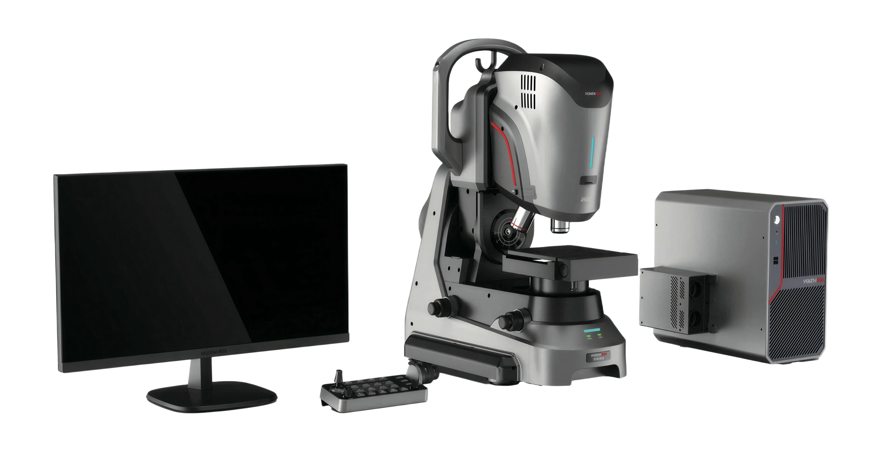

新疆中和鉴珠宝玉石质量检测研究所
Xinjiang Zhonghejian Gem & Jade Quality Testing Institute

超景深显微镜
刷新页面将丢失数据
安全注意事项
超景深显微镜
| 标准值(mm) | 第1次(μm) | 第2次(μm) | 第3次(μm) | 平均值(mm) | 示值误差(mm) | 重复性(mm) | 判定 |
|---|
| 标准值(mm) | 第1次(μm) | 第2次(μm) | 第3次(μm) | 平均值(mm) | 示值误差(mm) | 重复性(mm) | 判定 |
|---|
| 测量次数 | 中心点(μm) | 端点1(μm) | 端点2(μm) | 代表值(mm) |
|---|---|---|---|---|
| 第1次 | - | |||
| 第2次 | - | |||
| 第3次 | - |
覆盖视场约2/3的刻度长度
| 测量位置 | 测量值 (μm) |
|---|---|
| 位置1 (上) | |
| 位置2 (中) | |
| 位置3 (下) |
| 序号 | X坐标(μm) | Y坐标(μm) |
|---|
| 序号 | X坐标(μm) | Y坐标(μm) |
|---|
| 倍率 | X坐标值(μm) |
|---|---|
| 200X | |
| 150X | |
| 100X |
| 倍率 | Y坐标值(μm) |
|---|---|
| 200X | |
| 150X | |
| 100X |
| 序号 | 项目名称 | 判定结果 |
|---|---|---|
| 1 | 外观与功能性检查 | - |
| 2 | 平面尺寸测量误差 (EXY) | - |
| 3 | 垂直尺寸测量误差 (EZ) | - |
| 4 | 影像测头尺寸测量误差 (EV) | - |
| 5 | 影像测头探测误差 (PV) | - |
| 6 | 二维探测误差 (P2D) | - |
| 7 | 变倍探测误差 (PZ) | - |
最终判定